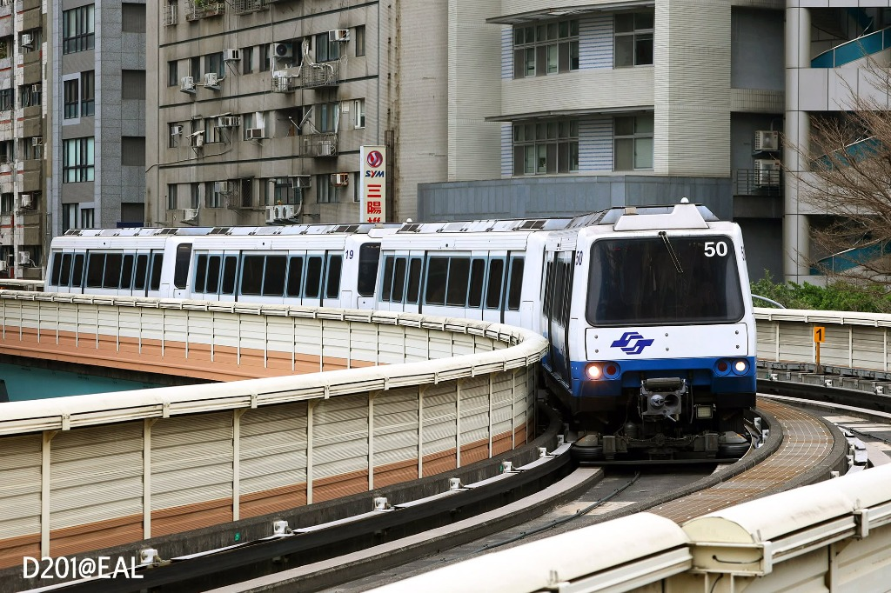
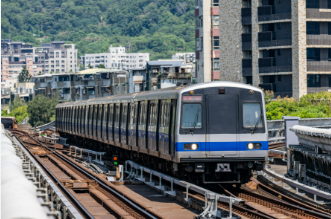
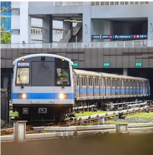
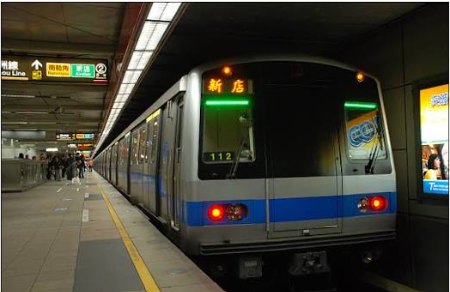
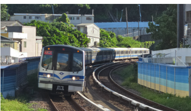

列車型號 VAL256
法國馬特拉 MATRA
來自法國 🇫🇷
中運量膠輪
大橡膠輪胎 🛞
無人自動駕駛
無人自動駕駛 🤖
VAL256 列車運行影片
🎬 VAL256 帥氣火車跑跑影片
影片提供 Air& Rail TRAVEL
VAL256 (法國馬特拉)
棕線橡皮擦小火車 🛞
全台首款無人駕駛中運量列車 沒有司機叔叔自己跑的小先鋒
製造商
法國馬特拉 (MATRA) / 阿爾斯通 (Alstom)
法國製造商
行駛路線
文湖線
棕色文湖線
上線營運
1996年3月28日
1996年
使用國家
台灣、美國
台灣、美國
- 1980年 規劃始動：台北市著手規劃捷運，將首條路線命名為「木柵線」，並前瞻性地決定採用無人自動駕駛系統。
- 馬特拉中標：由法國馬特拉 (MATRA) 成功得標，展開車輛規劃與製造。
- 1996年3月28日 正式通車：木柵線正式通車，成為全台灣第一條捷運路線。
- 營運初期的嚴峻挑戰：通車前後曾發生兩次火燒車事件與爆胎。主因是合約原規劃採「2節一組」營運，台北捷運為提升運量改為「4節一組」（重聯運轉），導致自動控制訊號不一致，煞車系統亦無法同步。
- 1997年 合約爭議對簿公堂：馬特拉公司與台北市政府發生合約糾紛，撤離所有在台技術人員，並終止提供零件與技術支援。當時台北市長陳水扁留下名言：「馬特拉不拉，我們自己拉！」
- 逆向工程展現韌性：台灣工程師與技術小組透過逆向工程自行開發到站顯示器，並在光華商場等電子市場尋找替代零件，成功維持系統穩定營運。
- 推進系統國產化更新：因原廠 BJT 功率元件停產，台北捷運於 2005 年前後自主研究，以新型推進電路取代舊推進電路，大幅降低故障率，維持高妥善率。
- 2009年 號誌更換與「換腦手術」：內湖線通車，全線更換為加拿大龐巴迪號誌系統。為了讓 VAL256 繼續在新系統上運作，列車經歷了號誌系統改造的「換腦手術」，以相容於 CITYFLO 650 通訊式列車控制技術。
- 1980年 決定無人開車：很久以前，工程師叔叔決定蓋一條叫「木柵線」的捷運，並決定不要司機，讓火車學會自己看路跑！ 🤖
- 法國小火車出生：法國的一家叫做馬特拉的公司做出了這款小火車。它在1996年3月28日通車，是全台灣第一個捷運寶寶喔！ 🇹🇼
- 生氣起火與爆胎：剛通車時它很不乖，發生過兩次冒火和爆胎。因為本來設計是2節車廂，捷運局為了多載人硬把它黏成4節，結果火車的煞車不同步、打架了！ 💥
- 不拉我們自己拉！：1997年外國原廠跟市政府吵架，生氣地把所有修理工程師都帶走，還不賣零件了！當時的市長帥氣地說：『原廠不拉，我們自己拉！』 👨🔧
- 光華商場尋寶：勇敢的台灣工程師叔叔跑到台北光華商場找電子零件，自己動手修理小火車，真的把它救活了！ 🔌
- 幫小火車裝省電心臟：因為以前的開車晶片停產了，台灣的專家在2005年幫它做了一款新型的省電晶片(IGBT)，小火車就不再調皮故障了。 💚
- 小火車的換腦手術：2009年，因為整條路線要換成新的電腦控制。工程師幫舊小火車做了一次『換腦大改造』，裝上新的接收器，它就能繼續在新鐵軌上快快樂樂奔跑囉！ 🧠
車體寬度
2.56 公尺
2.56 公尺（小巧身材，比大捷運窄一點）
每節車廂尺寸
長 13,780 mm × 寬 2,560 mm × 高 3,530 mm
大概跟一輛長長的公車一樣大
車體材質
鋁合金玻璃纖維製造
輕軟鋁金屬 + 堅固玻璃纖維（像穿著防彈衣！） 🛡️
車門配置
每節車廂 2 扇門，車廂之間「不互通」
兩邊各有兩扇門，車廂和車廂中間是不通的，不能走來走去喔！ 🚷
內部配置
座椅採用「非字形」排列，車廂燈光為暖色調
溫暖的黃色燈光，座位是背對背或面對面坐的
載客容量
每節車廂約可容納 114 ~ 116 人
一節車廂可以載 100 多個大小朋友喔！ 🎒
供電系統
750V DC 第三軌供電，下接觸型集電靴
火車是用底下的「電電軌」來喝電的（750伏特，非常危險不可靠近！） ⚡
馬達配置
每節車廂配置 2 具直流馬達
每節車廂有 2 個直流大力氣馬達 🐎
推進控制
早期採電樞斬波器 (BJT)，2005年自行研發更新為 IGBT 電路
以前是用傳統開關，2005年換了超聰明的電子節能晶片(IGBT)
動力性能
啟動加速度 4.68 km/h/s，設計極速 80 km/h，營運速度約 70 km/h
起步非常快！最快可以跟豹一樣跑 80 km/h 🐆
行走機構
膠輪系統，行駛於專為膠輪設計的有導軌混凝土路面上
它是用像大卡車一樣的**黑橡膠輪胎**在水泥地上跑，爬坡力一級棒！ 🛞

列車型號 C301
日本川崎重工 & 美國 URC
日本設計 + 美國組裝 🇯🇵🇺🇸
全球首創交流馬達車隊
全世界第一款交流馬達車 ⚡
經典「飛碟音」歷史車
會叫的飛碟火車 🛸
C301 列車運行影片
🎬 C301 帥氣火車跑跑影片
C301 (川崎重工 / 美國 URC)
淡水信義線的紅線元老老爺爺 👴
全台首款高運量列車 台灣第一台載人滿滿跑的鋼軌大捷運
製造商
日本川崎重工 & 美國 URC
日本與美國製造商
行駛路線
淡水信義線
紅色淡水信義線
上線營運
1997年
1997年
使用國家
台灣 (專屬車型)
台灣
- 1989年12月20日 正式開工：合約總工程金額約為新台幣 45 億元。由日本川崎重工與其美國子公司美國聯合鐵路機車集團 (URC) 共同打造。
- 尚未營運先環遊世界：因受到美國貿易法第301條款限制，合約規定列車必須在美國東岸進行組裝。車廂在紐約州揚克斯 (Yonkers) 的工廠組裝，這也是該工廠首次出口列車車廂。列車先在日本設計，再運至美國組裝，最後運回台灣，因而得名。
- 交流馬達先驅：C301 是全世界第一款全車隊採用交流 (AC) 感應馬達的城市捷運列車，相較於早期直流馬達，具有高效率、低維護與高可靠度。
- 經典「飛碟音」：早期使用美國西屋電機機電系統（GTO 晶閘管），在進出站時會發出獨特的多段式變頻聲音，被鐵道迷生動地形容為「飛碟音」。
- 2012年設備大翻修：因西屋電機零組件停產老化，推進系統更換為龐巴迪製造的 MITRAC TC1410 系列 IGBT 變流模組。更新後「飛碟音」消失，取而代之的是較安靜平穩的行走音。
- 性能與舒適度提升：更換龐巴迪系統後，列車起步與煞車更為和緩，改善了起步頓挫或停車頓挫感。驅動單元具有有效的電力管理與回生煞車功能。
- 坐船環遊世界的捷運老爺爺：1989年開工，花費了45億台幣！因為當時的法律規定，它的零件在日本設計，卻要坐大船去美國紐約的工廠組裝，最後再坐船運回台灣。還沒開始載客人，它就已經環遊世界一整圈啦！ 🚢🌎
- 全世界第一款交流馬達車：它是全世界第一款全部車廂都裝交流電馬達的大捷運！比起以前的舊馬達，它的馬達更厲害、不容易生病，力氣超級大！ 💪
- 會叫的飛碟捷運：以前開動的時候，它的馬達會發出「嗡嗡嗡」像太空飛碟降落的奇妙聲音，大家都叫它飛碟捷運！ 🛸
- 2012年心臟大變身：因為零件太老了，2012年時叔叔幫它換了龐巴迪新心臟(IGBT)。雖然換完後好聽的飛碟唱歌聲不見了，變得很安靜，但是坐起來更舒服、更不會震動囉！ 🤫
- 煞車還能發電：它有省電的綠色魔法，煞車時會把煞車力氣轉成電送回軌道，分給旁邊跑的其他小火車用，非常愛護地球！ ⚡
製造商
日本川崎重工 & 美國聯合鐵路機車集團 (URC)
日本川崎重工設計 + 美國工廠組裝（台美日合作） 🇯🇵🇺🇸
車體材質
不鏽鋼車體，堅固耐用
不生鏽的堅固白鐵身體
馬達配備
美國西屋電氣製造鼠籠式三相異步感應馬達
美國西屋大馬達（每具145千瓦，力大無窮） 🐎
車組編組
6節編組 (4M2T)
6節大車廂，一起手牽手跑 6️⃣
車門安全
氣動式車門系統
氣壓關門時會「嘶——碰！」一聲大吐氣 🚪
推進變流器 (更新後)
龐巴迪 MITRAC TC1410 系列 IGBT 變流模組
龐巴迪 MITRAC 省電控制箱（換心後非常平穩）
智慧大腦
MITRAC 系統，整合推進、煞車、車門、空調與旅客資訊
MITRAC 智慧管理大腦，管冷氣、管車門、管廣播 🧠
通訊網絡
TCN 架構，包含內部 MVB 匯流排與 WTB 線路列車匯流排
TCN 列車通訊網路（像火車內部的對講電話線） 📞
乙太網路整合
引進全球首款 IP 架構 TCMS，頻寬高達 100 Mbit/s，支援車載錄影監視
全球第一台裝有超高速網路的捷運，車廂內有錄影鏡頭保護大家 🎥
自我診斷
內建 BITE 一自我測試與診斷系統，即時可視化故障訊息
裝有神奇診斷機，哪裡痛痛自己用螢幕秀給修理叔叔看 🩺

列車型號 C321
德國西門子 SIEMENS
德國出身 🇩🇪
高運量鋼軌
鋼鐵大軌道 🛤️
波爾舍工作室外觀監修
超跑保時捷同款設計 🏎️
C321 列車運行影片
🎬 C321 帥氣火車跑跑影片
C321 (德國西門子)
藍線會唱歌的保時捷捷運 🎵
北捷東西向運輸的核心主力 每天在地下跑、最有力氣的大鐵車
製造商
德國西門子 (Siemens) 等
德國西門子
行駛路線
板南線
藍色板南線
上線營運
1999年
1999年
使用國家
台灣 (專屬車型)
台灣
- 1999-2000 東西向大動脈通車：板南線作為第一條東西向路線通車，旨在與南北向路網及木柵線交會。1999年聖誕夜「市政府－西門」、龍山寺等通車，並陸續於 2000~2015 年間向兩端延伸至昆陽、頂埔。
- 西門子德國製造：列車由德國西門子製造，於1998至1999年組裝生產，總計36列（216輛）。其中108輛採技術轉移，由台灣中國鋼鐵公司進行組裝。
- Porsche Design 外觀監修：外觀概念源自90年代末期西門子推行的模組化地鐵設計，並由知名的波爾舍設計工作室 (Porsche Design Studio) 參與美學監修。
- 車體材料風波：車體為不鏽鋼，但因製造商使用了次級材料，在撞擊測試時發生嚴重變形。西門子工程師隨後進行補強加料，導致 C321 車重大幅增加，且表面較為霧白，這也使其與川崎重工的亮灰色車體有明顯差別。
- 營運調度調回板南線：初期分散配置於中和線、新店線與淡水線，後因高架段煞車不一致且雨天易打滑，加上維修調度考量，於 2009 年全數集中移交至板南線專責營運。
- 推進系統更新計畫：由於已營運逾20年，目前正由台灣車輛公司承接推進系統更新，將舊型 GTO-VVVF 逐步汰換為瑞士 ABB 製造的 BORDLINE CG750 系列 IGBT-VVVF 牽引系統。
- 大動脈通車：1999年的聖誕夜，載大家去台北東區和西門町的板南線捷運通車啦！ 🎅
- 德國血統+超跑設計：它是德國西門子公司做的，而且外表是由設計「保時捷超跑」的設計師設計的喔！所以車頭看起來超級帥氣！ 🏎️
- 火車吃太胖了：它是用不會生鏽的白鐵（不鏽鋼）做的。但以前測試時車體有些變形，所以工程師幫它加了厚厚的鋼板，結果讓它變得比別台車還要胖、還要重！ 🐘
- 雨天怕滑倒，搬家到地下：它以前在外面高架橋上跑，下雨天煞車容易打滑。所以2009年時，長官決定讓它全部「搬家」到地底下的板南線，就不怕淋雨滑倒囉！ 🌧️
- 幫老火車換心臟：這台小火車已經在地下辛辛苦苦跑了20幾年了。工程師叔叔現在正在幫它進行心臟更新（換上瑞士ABB的新晶片），讓它更有活力、更安全！ 🇨🇭
編組型式
4M2T（4節動力車，2節拖車，共6節編組）
6節車廂在一起，有4節會出力，2節被拉著跑 6️⃣
車體材質
補強型不鏽鋼車體，自重大幅增加
加厚型亮晶晶白鐵（不鏽鋼）
內裝飾板
全白色玻璃纖維強化塑膠 (FRP) 面板，質感潔白
車廂裡面的牆壁是雪白色的，非常乾淨亮眼 ❄️
轉向架
德國原廠 SF 2000 型轉向架
德國做的輪胎架子（轉向架），讓火車轉彎不跌倒
安全結構改良
2003年發生齒輪箱脫軌事件後，西門子強化了扭力臂結構，增加托耳厚度並強化螺栓強度
2003年輪子零件曾經掉下來過，後來德國專家用粗螺絲加強固定，現在超安全！
推進系統 (更新前)
西門子 G750 D550/600 M5-1 GTO-VVVF 變流器
會唱歌的西門子 GTO 電子喉嚨 🎵
推進系統 (更新中)
瑞士 ABB BORDLINE CG750 IGBT-VVVF 系統
正升級為瑞士製造的新心臟，變得很安靜
牽引馬達
西門子 1TB2013 系列三相異步感應馬達（單具 230kW，整列共 3680 kW）
西門子大馬達，總共3680千瓦（有 5000 隻馬的力量！） 🐎
煞車系統
再生電力煞車與踏面碟式摩擦煞車聯合運作
煞車時會把電還給軌道，並搭配像腳踏車一樣的碟盤夾住煞車
煞車重製計畫
針對 113-118 年原廠已停產且老化的電控單元 (BWC) 及空壓機 (CP) 進行全新氣控與感測器更新
113-118年正把舊氣動煞車換成全新電子氣控，煞車更靈敏
輔助電力
750V DC 轉 380V AC (三相) 與 110V DC 控制電源
把軌道的電轉成 380伏特 的冷氣電，讓車廂涼呼呼 ❄️

列車型號 C371
日本川崎重工 & 台灣車輛
日本設計 + 台灣組裝 🇯🇵🇹🇼
高運量鋼軌
鋼鐵軌道 🛤️
台日合作國產化代表
台灣製造驕傲 🛠️
C371 列車運行影片
🎬 C371 帥氣火車跑跑影片
C371 (川崎重工 / 台灣車輛)
綠線/橘線的台灣組裝小國產 🇹🇼
台北捷運高運量國產化里程碑 台灣工程師叔叔親手組裝的大捷運
製造商
日本川崎重工 & 台灣車輛
日本與台灣製造商
行駛路線
松山新店線、中和新蘆線
綠色與橘色線
上線營運
2006年
2006年
使用國家
台灣 (專屬車型)
台灣
- 2003年 招擺始動：台北捷運為新莊線、蘆洲線、南港線東延段以及小碧潭支線的運量需求進行321輛電聯車招標（非 C321 型），競標廠商有加拿大龐巴迪、德國西門子與日本川崎重工，最後由川崎重工中標。
- 台日合作與工業合作企劃 (ICP)：製造過程體現了台灣推動的工業合作企劃。列車分為 3 系（日本川崎兵庫工廠製造原型）與 4 系（台灣車輛公司負責組裝）兩個工程階段製作。
- 3系製造 (2005-2007)：川崎重工負責，2005年11月在日本兵庫舉行出廠典禮，同年12月運抵台灣。此批次包含新北投和小碧潭支線專用的 3 節編組列車。
- 4系本土製造 (2008-2009)：C371 是台灣車輛公司首度參與生產的捷運車型，實現了鋼鐵下料、總組立等本土化生產，於 2010 年 1 月全數完工。
- 2006年7月22日 支線營運：3節編組列車首度投入新北投支線與小碧潭支線營運。
- 2006年8月22日 主線啟動：6節編組的主線列車開始在淡水新店線服務，逐步取代原有的 C321 型（後者全數移往板南線）。
- 現行配屬路線：3系列車目前主要行駛於松山新店線；4系列車則配屬在蘆洲、中和及新莊機廠，主要行駛於中和新蘆線。
- 大火車招標比賽：2003年，台北捷運要為好多新路線買火車。加拿大、德國、日本的公司一起來比賽，最後日本川崎重工贏了！ 🏆
- 台灣第一次做大捷運：這批車非常特別，因為日本把做火車的魔法交給台灣！這台車是由新竹的「台灣車輛公司」第一次自己組裝的喔，是台灣的驕傲！ 🇹🇼
- 日本生原型，台灣生寶寶：前幾台列車（3系）在日本做，做完運到台灣。後面的火車（4系）全都是台灣工人叔叔在台灣組裝的，2010年全數做完！
- 小小3節車廂出發：2006年夏天，只有3節車廂的短捷運開始在新北投和小碧潭跑，超級可愛！ 🚇
- 主線大幫忙：2006年8月，6節長捷運在淡水新店線上班，把舊的西門子火車換去板南線。
- 現在在哪裡跑：日本做的3系列車現在在綠色線（松山新店線）跑；台灣做的4系列車則配屬在橘色線（中和新蘆線），載大家上下學！ 🧡💚
推進變頻器
三菱電機 IGBT-VVVF 變頻器（三相電壓型 PWM 變流器）
日本三菱製造的超靜音電子心臟(IGBT) 🇯🇵
牽引馬達
三菱電機 MB-5113-A 交流感應馬達（每具功率 175 kW）
三菱強力馬達（一節車廂有 240 匹馬的力氣！）
驅動與傳動
三菱電機 WN 傳動器，齒輪比設定為 6.31
齒輪傳動比是 6.31，加速超平穩
供電電壓
DC 750V，道旁第三軌供電
750伏特直流電，也是吸底下的軌道電
輔助電源 (SIV)
三菱電機 PWM IGBT 靜態換流器，DC 750V 轉 AC 380V（供應空調與照明）
把高壓電轉成家用 380伏特，吹冷氣和點亮燈泡 💡
電池系統
配備專用電池充電器，維持列車輔助電源電池電力
有大顆的備用電池，就算突然停電也能維持呼吸燈光
監控與保安系統 (TCMS)
三菱電機製造，容量大升至 57 小時（C301僅24小時），能更強力記錄運轉資訊
火車的**「超級大腦記憶體」**，可以連續記住 57 小時的事情！誰生病了大腦馬上知道 🧠
行車防護系統
配備 ATC（自動列車控制）、ATP（自動列車防護）並支援 ATO（自動列車駕駛）
裝有自動限速防撞和自動開車系統，是司機叔叔的超強助手 🛡️
軔機（煞車）系統
日本 Nabtesco 提供，具備再生電軔、電阻電軔及電控氣軔（優先使用再生電軔）
聰明煞車！優先用馬達吸電減速，把剩餘的電回收給其他火車用 ⚡
空氣壓縮機
螺旋式空氣壓縮機，排氣量達 1,570 L/min
像旋風一樣的大打氣機，幫煞車系統提供滿滿氣力
車門系統改良
由 C301/C321 的氣壓門升級為雙開式「電動馬達門機」，開關平順，緊急旋鈕可同步打開同側所有車門
重大發明！改成**溫柔的電動車門**，再也沒有舊車「嘶——碰！」的排氣巨響，開關超安靜！ 🚪
空調設備
分離式空調系統（無暖氣功能）
大冷氣系統（但因為台灣很熱，所以沒有裝暖氣功能） 🥵

列車型號 C381
日本川崎重工 & 台灣車輛
日本川崎 + 新竹台車組裝 🇯🇵🇹🇼
流線型新世代車頭
子彈流線型帥氣臉蛋 🚄
TCMS 智慧列車監控
18天超強大腦記憶 🧠
C381 列車運行影片
🎬 C381 帥氣火車跑跑影片
影片提供 匿銘とくメイ
C381 (川崎重工 / 台灣車輛)
紅線最新的流線子彈捷運 🚄
台北捷運最新銳的流線型列車 目前捷運家族裡最帥氣的流線型火車
製造商
日本川崎重工 & 台灣車輛
日本與台灣製造商
行駛路線
淡水信義線、松山新店線
紅色與綠色線
上線營運
2012年
2012年
使用國家
台灣 (專屬車型)
台灣
- 信義松山線增備：針對信義線（CR381標 13列）與松山線（CG391標 10列）運量需求而採購，後因板南線延伸頂埔增購1列，共計24列（144輛）。解決了因 C321/C301 移交所留下的運力空缺。
- 2014年 直通運轉結束：2013年信義線通車、2014年底淡水新店線直通模式走入歷史。淡水線正式與信義線連接，形成現今的「淡水信義線」與「松山新店線」，C381 即為這兩條路線的代表車款。
- C371型的強力後援：C381 與前代 C371 零件高度相容（達50%），駕駛室、機電與旅客介面等可直接互通。
- 台日合作 國車國造：首6列由日本川崎重工製造，其餘18列（108輛）技術轉移至新竹「台灣車輛公司」組裝生產。第一列於 2010 年抵台測試，並於 2012 年 10 月 7 日正式投入營運。
- 新路線需要帥哥：2007年，為即將蓋好的信義線（紅線）和松山線（綠線），捷運局又跟日本川崎還有新竹的台灣工廠買了24台超級帥的新捷運！
- 紅綠大合體：2014年底，以前淡水直通新店的模式結束了，紅線和綠線各自獨立，C381 便成為「淡水信義線」和「松山新店線」上的常客明星！ 🌟
- 前輩的超級好朋友：它跟上一代 C371 是很好的麻吉，有一半的零件是可以互相拆下來借給對方用的，超級方便！ 🤝
- 同樣是台日混血：前 6 台在日本做好坐船來台灣，剩下的 18 台也是在我們新竹的工廠完成組裝的。2012年10月7日第一列正式載客出發！ 🚢
推進變流器
三菱電機 IGBT-VVVF 變流器 (MAP-184-75VD139A)
最新款三菱電機高頻變頻心臟(IGBT)
牽引馬達
三菱電機 MB-5113-A2 開放式三相感應馬達（單具 175kW，整列共 2,800 kW）
安靜馬達，總輸出 2800 千瓦（相當於 3800 匹馬同時奔跑！） 🐎
傳動機構
WN 聯軸器傳動 (WN-1601-AF2)，齒輪比 6.31
齒輪箱滾動更滑順，幾乎沒有噪音
集電系統
轉向架兩側下抵觸式集電靴，輸入 750V DC 直流電
用輪子旁邊的「吸電靴」去碰旁邊軌道的 750V 直流電
煞車系統
回生煞車 + 電阻煞車 + 電控氣軔；配備 Nabtesco 碟式摩擦煞車
最新日本 Nabtesco 碟煞，減速滑順又穩當，站著的人都不會倒！ 🛑
列車監控與保安
三菱電機製造 TCMS，記憶體容量提升至 18 天份（前代為 3 天），大幅提升維修判讀力
**「神盾大腦系統」(TCMS)**：記憶體超大，能記住 18 天內發生的所有大小事，是維修叔叔的得力助手 🧠
車門系統
雙開式電動線性馬達機，具備敏感的阻礙檢測及自動重開功能
**神奇避夾車門**：如果背包或手腳被門夾到，門會「嗶嗶嗶」像碰到彈簧一樣自己彈開喔！ 🚪
輔助電力系統
PWM IGBT 靜態換流器 (750V DC 轉 380V AC 三相)，供應空調、空壓機與照明
超大換電器，把底下的電轉換給冷氣、車廂燈光和動態螢幕用
備用控制電
獨立電池充電器，供應全車 110V DC 控制與緊急用電
備用發電機，隨時充電維持控制螢幕電力
連接器
編組兩端採 Tomlison 密著連結器，車廂間採半永久式連結器
車頭有一個自動連結器，像張開的嘴巴，可以跟別台車牽手親親黏在一起！ 💋